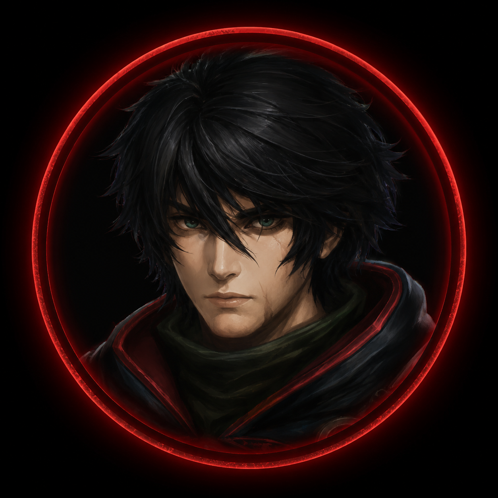

━━━ THE LAST DAWN ━━━
🔱 REGISTRO OFICIAL — SESSÃO 14
🧮 XP DE OFÍCIO — O QUE CADA UM FEZ
⚕️ Elion — Médico / Clérigo
• Prestou atendimento médico em Kael antes da missão
• Aplicou conhecimentos analíticos durante a investigação de Greyfield
→ +30 XP | 520 → 550 XP (550/650)
🔨 Kael — Ferreiro / Técnico de Forja-Viva
• Não participou da missão
→ +0 XP | 40 → 40 XP
🏹 Caçador — Rastreador
• Estudou o ambiente ao redor da estação
• Identificou a ausência completa de fauna
→ +10 XP | 350 → 360 XP
🌿 Evangeline — Herbalista / Alquimista
• Localizou diversos documentos ocultos
• Recuperou registros importantes
→ +20 XP | 350 → 370 XP
🐊 Crocotop — Pescador
• Nenhuma ação ligada ao ofício
→ +0 XP | 180 → 180 XP
🍳 Eren — Cozinheiro
• Traduziu toda a documentação de Greyfield (sem relação com ofício)
→ +0 XP | 90 → 90 XP
⚔️ Dravon — Mercenário
• Não participou da missão
→ +0 XP | 20 → 20 XP
📊 N.E.A. — EXPOSIÇÃO ARCANA
Greyfield não era uma ruptura comum. Os personagens permaneceram durante horas em um ponto onde duas realidades coexistiam.
• Elion: 31% → 33% (+2%)
• Evangeline: 31% → 33% (+2%)
• Caçador: 32% → 34% (+2%)
• Crocotop: 38.9% → 40.9% (+2%)
• Eren: 39.4% → 41.4% (+2%)
• Kael: Sem alteração
• Dravon: Sem alteração
🛡️ HONRA — AÇÕES DA SESSÃO
⚕️ Elion +2% → 100% (Capado)
• Atendimento médico a Kael • Protocolos de segurança • Evitou riscos desnecessários
🌿 Evangeline +2% → 96%
• Compartilhou descobertas • Atuou com extrema cautela
🏹 Caçador +2% → 99%
• Protegeu a equipe • Manteve vigilância constante
🐊 Crocotop +1% → 100% (Capado)
• Permaneceu ao lado do grupo • Lealdade em momentos críticos
🍳 Eren +2% → 100% (Capado)
• Compartilhou todas as traduções • Colaboração direta
Kael: Sem alteração | Dravon: Sem alteração
☠️ CORRUPÇÃO
Nenhum personagem realizou ações que aumentassem sua Corrupção. Também não houve atos suficientes para reduzir Corrupção existente.
Nenhuma alteração.
📚 DESCOBERTAS IMPORTANTES
• Primeira descoberta da Estação Greyfield
• Confirmação da existência da Convergência entre realidades
• Descoberta dos Protocolos de Evacuação
• Descoberta de registros sobre Tiberio
• Descoberta da Floresta Sem Céu
• Primeiro contato com o rádio de Greyfield
• Primeira transmissão contendo os nomes "Tis" e "Dudu"
• Descoberta do mural de investigação
• Fotografias impossíveis de pessoas que jamais deveriam existir naquela realidade
• Fotografias de Elion, Eren e Crocotop presentes em registros de Greyfield
• Descoberta de que o grupo era o "barulho na floresta" durante os eventos do spin-off
• Descoberta de que a morte temporária de Dudu foi causada pela colisão entre duas realidades
• Primeiro encontro com Tiberio
• Primeira menção direta ao nome Ely
• Materialização da Árvore Impossível em Zaharam
👑 MVPs DA SESSÃO
🛈 CLIQUE NAS INTERROGAÇÕES PARA REVELAR OS MVPs

• Tornou possível compreender Greyfield
• Sem ele, diversas pistas permaneceriam inacessíveis

• Lembrou constantemente dos protocolos encontrados
• Guiou boa parte das decisões da exploração

• Recuperou registros essenciais
• Expandiu significativamente a investigação
• Foi quem mais conectou as informações encontradas
• Liderou o raciocínio lógico durante a exploração
• Evitou diversos perigos ao lembrar constantemente dos Protocolos de Evacuação
• Foi peça central para que Greyfield fosse compreendida pelo grupo
🎬 MOMENTOS MARCANTES
- Araly sendo insultado por Dravon ao convocar os heróis
- A punição imposta por Barn após o incidente envolvendo Dravon e Kael
- A tensa negociação entre Barn Clant e Elion no palácio
- A chegada à Estação Greyfield
- O rádio ligando sozinho pela primeira vez
- A descoberta do Protocolo de Evacuação
- O mural de investigação de Tiberio
- As fotografias impossíveis de personagens de Elfheim
- A floresta escondida atrás da porta de madeira
- A revelação de que eles eram o "barulho na floresta"
- A colisão entre duas realidades durante a morte de Dudu
- O colapso completo de Greyfield
- O primeiro encontro com Tiberio
- A frase: "Vocês demoraram mais do que eu esperava."
- A revelação do nome Ely
- O surgimento da Árvore Impossível em Zaharam
📖 ENCERRAMENTO
Greyfield desapareceu.
Mas ela deixou algo para trás.
Não apenas uma árvore.
Não apenas documentos.
Ela deixou perguntas.
E, pela primeira vez...
um rosto.
Tiberio agora sabe que eles existem.
E eles finalmente sabem que nunca estavam investigando Greyfield.
Greyfield estava esperando por eles.